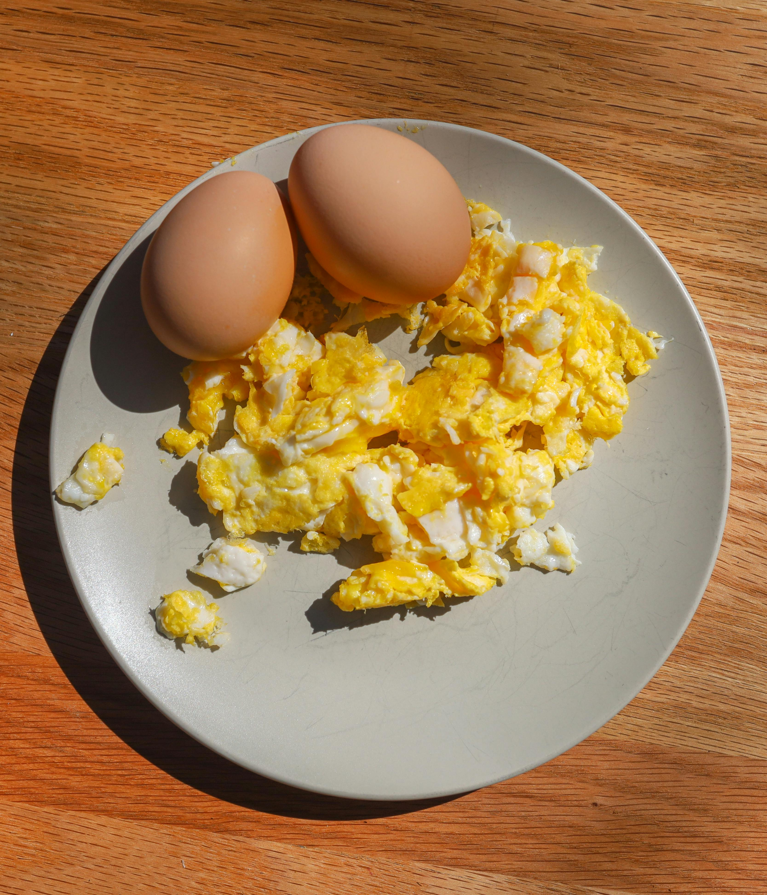

Return to Index

Scrambled Eggs!
Ingredients Required:
- 3 Eggs
- 1 teaspoon milk
- 1 tbsp olive oil
- salt and pepper
Steps to Prepare:
- crack the eggs into a bowl. add a teaspoon of milk and beat well.
- add a light amount of olive oil to a pan and bring to medium heat.
- add the egg mixture to the pan and allow it to cook without stirring for one minute. run the spatula along the bottom of the pan to prevent the eggs from settling.
- continue cooking while folding and stirring the eggs to form curds.
- when eggs are mostly set, remove the pan from heat and allow them to cool for a couple minutes before serving.